HE Plots for Repeated Measures Designs
Michael Friendly
2026-11-27
Source:vignettes/HE_repeated.Rmd
HE_repeated.RmdVignette built using heplots, version 1.9.0
and car, version 3.1-5.
Note: This vignette is adapted from Friendly (2010), “HE Plots for Repeated Measures Designs”, Journal of Statistical Software, 37(4). The text and analyses follow that paper, updated for current versions of
heplotsandcar, and with the presentation rethought for a modern reader: within-S effects are analyzed and plotted directly from the fitted model, and a new example treats occasions that are not equally spaced. See the Discussion for what has changed.
Abstract: Hypothesis Error (HE) plots, introduced in Friendly (2007),
provide graphical methods to visualize hypothesis tests in multivariate linear models,
by displaying hypothesis and error covariation as ellipsoids and providing visual
representations of effect size and significance. These methods are implemented in
the heplots package for R (Friendly, Fox, & Monette, 2026) and SAS (Friendly, 2006),
and apply generally to designs with fixed-effect factors (MANOVA), quantitative
regressors (multivariate multiple regression) and combined cases (MANCOVA).
This vignette describes the extension of these methods to repeated measures designs
in which the multivariate responses represent the outcomes on one or more
“within-subject” factors. This extension is illustrated using the heplots package
for R. Examples describe one-sample profile analysis, designs with multiple between-S
and within-S factors, and doubly-multivariate designs, with multivariate responses
observed on multiple occasions.
1 Introduction
Hypothesis Error (HE) plots, introduced in Friendly (2007),
provide graphical methods to visualize hypothesis tests in multivariate linear models,
by displaying hypothesis and error covariation as ellipsoids and providing visual
representations of effect size and significance.
The heplots package (Friendly et al., 2026) for R (R Core Team, 2026) implements these methods
for the general class of the multivariate linear model (MLM) including
fixed-effect factors (MANOVA), quantitative regressors (multivariate multiple regression (MMREG))
and combined cases (MANCOVA). Here, we describe the extension of these methods to repeated
measures designs in which the multivariate responses represent the outcomes on one or more
“within-subject” factors.
1.1 Multivariate linear models: Notation
To set notation, we express the MLM as \[\begin{equation} \underset{(n \times p)}{\mathbf{Y}} = \underset{(n \times q)}{\mathbf{X}} \; \underset{(q \times p)}{\mathbf{B}} + \underset{(n \times p)}{\mathbf{U}} \; , \tag{1.1} \end{equation}\] where \(\mathbf{Y} \equiv (\mathbf{y}_1, \mathbf{y}_2, \dots, \mathbf{y}_p)\) is the matrix of responses for \(n\) subjects on \(p\) variables, \(\mathbf{X}\) is the design matrix for \(q\) regressors, \(\mathbf{B}\) is the \(q \times p\) matrix of regression coefficients or model parameters and \(\mathbf{U}\) is the \(n \times p\) matrix of errors, with \(\textrm{vec}(\mathbf{U}) \sim \mathcal{N}_p ( \mathbf{0}, \mathbf{I}_n \otimes \mathbf{\Sigma} )\), where \(\otimes\) is the Kronecker product.
A convenient feature of the MLM for general multivariate responses is that
all tests of linear hypotheses (for null effects) can be represented in the form of a
general linear test,
\[\begin{equation}
H_0 : \underset{(h \times q)}{\mathbf{L}} \;
\underset{(q \times p)}{\mathbf{B}} =
\underset{(h \times p)}{\mathbf{0}} \; ,
\tag{1.2}
\end{equation}\]
where \(\mathbf{L}\) is a matrix of constants whose rows specify
\(h\) linear combinations or contrasts of the parameters to be tested simultaneously
by a multivariate test. In R all such tests can be carried out using
the functions car::Anova() and car::linearHypothesis() in the car package (Fox & Weisberg, 2019).
For any such hypothesis of the form (1.2), the analogs of the univariate sums of squares for hypothesis (\(SS_H\)) and error (\(SS_E\)) are the \(p \times p\) sum of squares and crossproducts (SSP) matrices given by (Timm, 1975, Ch. 3, 5): \[\begin{equation} \mathbf{H} \equiv \mathbf{SSP}_H = (\mathbf{L} \widehat{\mathbf{B}})^\top \, [\mathbf{L} (\mathbf{X}^\top \mathbf{X} )^{-} \mathbf{L}^\top]^{-1} \, (\mathbf{L} \widehat{\mathbf{B}}) \; , \tag{1.3} \end{equation}\] and \[\begin{equation} \mathbf{E} \equiv \mathbf{SSP}_E = \mathbf{Y}^\top \mathbf{Y} - \widehat{\mathbf{B}}^\top (\mathbf{X}^\top \mathbf{X}) \widehat{\mathbf{B}} = \widehat{\mathbf{U}}^\top \widehat{\mathbf{U}} \; , \tag{1.4} \end{equation}\] where \(\widehat{\mathbf{U}} = \mathbf{Y} - \mathbf{X} \widehat{\mathbf{B}}\) is the matrix of residuals. Multivariate test statistics (Wilks’ \(\Lambda\), Pillai trace, Hotelling-Lawley trace, Roy’s maximum root) for testing (1.2) are based on the \(s = \min(p, h)\) non-zero latent roots of \(\mathbf{H} \mathbf{E}^{-1}\) and attempt to capture how “large” \(\mathbf{H}\) is, relative to \(\mathbf{E}\) in \(s\) dimensions. All of these statistics have transformations to \(F\) statistics giving either exact or approximate null hypothesis \(F\) distributions. The corresponding latent vectors give a set of \(s\) orthogonal linear combinations of the responses that produce maximal univariate \(F\) statistics for the hypothesis in (1.2); we refer to these as the canonical discriminant dimensions.
In a univariate, fixed-effects linear model, it is common to provide \(F\) tests for each term in the model, summarized in an analysis-of-variance (ANOVA) table. The hypothesis sums of squares, \(SS_H\), for these tests can be expressed as differences in the error sums of squares, \(SS_E\), for nested models. For example, dropping each term in the model in turn and contrasting the resulting residual sum of squares with that for the full model produces so-called Type-III tests; adding terms to the model sequentially produces so-called Type-I tests; and testing each term after all terms in the model with the exception of those to which it is marginal produces so-called Type-II tests. Closely analogous MANOVA tables can be formed similarly by taking differences in error sum of squares and products matrices (\(\mathbf{E}\)) for such nested models. Type I tests are sensible only in special circumstances; in balanced designs, Type II and Type III tests are equivalent. Regardless, the methods illustrated here apply to any multivariate linear hypothesis.
1.2 Data ellipses and ellipsoids
In what follows, we make extensive use of ellipses (or ellipsoids in 3+D) to represent joint variation among two or more variables, so we define this here. The data ellipse (or covariance ellipse), described by Dempster (1969) and Monette (1990), is a device for visualizing the relationship between two variables, \(Y_{1}\) and \(Y_{2}\). Let \(D_{M}^{2}(\mathbf{y}) = (\mathbf{y}-\overline{\mathbf{y}})^\top \mathbf{S}^{-1} (\mathbf{y}-\overline{\mathbf{y}})\) represent the squared Mahalanobis distance of the point \(\mathbf{y} = (y_{1}, y_{2})^\top\) from the centroid of the data \(\overline{\mathbf{y}} = (\overline{Y}_{1}, \overline{Y}_{2})^\top\). The data ellipse \(\mathcal{E}_{c}\) of size \(c\) is the set of all points \(\mathbf{y}\) with \(D_{M}^{2}(\mathbf{y})\) less than or equal to \(c^{2}\): \[\begin{equation} \mathcal{E}_{c}(\mathbf{y}; \mathbf{S}, \overline{\mathbf{y}}) \equiv \left\{ \mathbf{y} : (\mathbf{y}-\overline{\mathbf{y}})^\top \mathbf{S}^{-1} (\mathbf{y}-\overline{\mathbf{y}}) \leq c^{2} \right\} \; . \tag{1.5} \end{equation}\] Here, \(\mathbf{S} = \sum_{i=1}^{n}(\mathbf{y}_i-\overline{\mathbf{y}})(\mathbf{y}_i-\overline{\mathbf{y}})^\top/(n-1) = \widehat{\mathsf{Var}}(\mathbf{y})\) is the sample covariance matrix.
Many properties of the data ellipse hold regardless of the joint distribution of the variables, but if the variables are bivariate normal, then the data ellipse represents a contour of constant density in their joint distribution. In this case, \(D_{M}^{2}(\mathbf{y})\) has a large-sample \(\chi^{2}\) distribution with 2 degrees of freedom, and so, for example, taking \(c^{2}=\chi_{2}^{2}(0.95)=5.99\approx6\) encloses approximately 95 percent of the data. Taking \(c^{2}=\chi_{2}^{2}(0.68)=2.28\) gives a bivariate analog of the univariate \(\pm 1\) standard deviation interval, enclosing approximately 68% of the data.
The generalization of the data ellipse to more than two variables is immediate: Applying Equation (1.5) to \(\mathbf{y} = (y_{1},y_{2},y_{3})^\top\), for example, produces a data ellipsoid in three dimensions. For \(p\) multivariate-normal variables, selecting \(c^{2}=\chi_{p}^{2}(1-\alpha)\) encloses approximately \(100(1-\alpha)\) percent of the data.1
1.3 HE plots
The essential idea behind HE plots is that any multivariate hypothesis test (1.2) can be represented visually by ellipses (or ellipsoids in 3D) which express the size of co-variation against a multivariate null hypothesis (\(\mathbf{H}\)) relative to error covariation (\(\mathbf{E}\)). The multivariate tests, based on the latent roots of \(\mathbf{H} \mathbf{E}^{-1}\), are thus translated directly to the sizes of the \(\mathbf{H}\) ellipses for various hypotheses, relative to the size of the \(\mathbf{E}\) ellipse. Moreover, the shape and orientation of these ellipses show something more: the directions (linear combinations of the responses) that lead to various effect sizes and significance.
In these plots, the \(\mathbf{E}\) matrix is first scaled to a covariance matrix (\(\mathbf{E}/df_e = \widehat{\mathsf{Var}}(\mathbf{U}_i)\)). The ellipse drawn (translated to the centroid \(\overline{\mathbf{y}}\) of the variables) is thus the data ellipse of the residuals, reflecting the size and orientation of residual variation. In what follows (by default), we always show these as “standard” ellipses of 68% coverage. This scaling and translation also allows the means for levels of the factors to be displayed in the same space, facilitating interpretation.
The ellipses for \(\mathbf{H}\) reflect the size and orientation of covariation against the null hypothesis. They are always proportional to the data ellipse of the fitted effects (predicted values) for a given hypothesized term. In relation to the \(\mathbf{E}\) ellipse, the \(\mathbf{H}\) ellipses can be scaled to show either the effect size or strength of evidence against \(H_0\) (significance).
For effect size scaling, each \(\mathbf{H}\) is divided by \(df_e\) to conform to \(\mathbf{E}\). The resulting ellipses are then exactly the data ellipses of the fitted values, and correspond visually to multivariate analogs of univariate effect size measures (e.g., \((\bar{y}_1-\bar{y}_2)/s\) where \(s\) = within group standard deviation). That is, the sizes of the \(\mathbf{H}\) ellipses relative to that of the \(\mathbf{E}\) reflect the (squared) differences and correlation of the factor means relative to error covariation.
For significance scaling, it turns out to be most visually convenient to use Roy’s largest root test as the test criterion. In this case the \(\mathbf{H}\) ellipse is scaled to \(\mathbf{H}/(\lambda_\alpha df_e)\) where \(\lambda_\alpha\) is the critical value of Roy’s statistic. Using this gives a simple visual test of \(H_0\): Roy’s test rejects \(H_0\) at a given \(\alpha\) level if and only if the corresponding \(\alpha\)-level \(\mathbf{H}\) ellipse extends anywhere outside the \(\mathbf{E}\) ellipse.2 Consequently, when the rank of \(\mathbf{H} = \min(p, h) \le 2\), all significant effects can be observed directly in 2D HE plots; when \(\textrm{rank}(\mathbf{H})=3\), some rotation of a 3D plot will reveal each significant effect as extending somewhere outside the \(\mathbf{E}\) ellipsoid.
In the R implementation, the basic plotting functions in the heplots package are
heplot() and heplot3d() for mlm objects.
These rely heavily on Anova() and other functions from the car package
(Fox & Weisberg, 2019) for computation.
For more than three response variables, all pairwise HE plots can be
shown using a pairs() method for mlm objects. Alternatively, the related
candisc package (Friendly & Fox, 2026) produces HE plots in canonical discriminant space.
This shows a low-rank 2D (or 3D) view of the effects for a given
term in the space of maximum discrimination, based on the linear combinations
of responses which produce maximally significant test statistics.
See Friendly (2007) and Fox, Friendly, & Monette (2009) for details
and examples for between-S MANOVA designs, MMREG and MANCOVA models.
2 Repeated measures designs
The framework for the MLM described above pertains to the situation in which the response vectors (rows, \(\mathbf{y}_i^\top\) of \(\mathbf{Y}_{n \times p}\)) are iid and the \(p\) responses are separate, not necessarily commensurate variables observed on individual \(i\).
In principle, the MLM extends quite elegantly to repeated-measure (or within-subject) designs, in which the \(p\) responses per individual can represent the factorial combination of one or more factors that structure the response variables in the same way that the between-individual design structures the observations. In the multivariate approach to repeated measure data, the same model (1.1) applies, but hypotheses about between- and within-individual variation are tested by an extended form of the general linear test (1.2), which becomes \[\begin{equation} H_0 : \underset{(h \times q)}{\mathbf{L}} \; \underset{(q \times p)}{\mathbf{B}} \; \underset{(p \times k)}{\mathbf{M}} = \underset{(h \times k)}{\mathbf{0}} \; , \tag{2.1} \end{equation}\] where \(\mathbf{M}\) is a matrix of constants whose columns specify \(k\) linear combinations or contrasts among the responses, corresponding to a particular within-individual effect. In this case, the \(\mathbf{H}\) and \(\mathbf{E}\) matrices for testing (2.1) become \[\begin{equation} \mathbf{H} = (\mathbf{L} \widehat{\mathbf{B}} \mathbf{M})^\top \, [\mathbf{L} (\mathbf{X}^\top \mathbf{X} )^{-} \mathbf{L}^\top]^{-1} \, (\mathbf{L} \widehat{\mathbf{B}} \mathbf{M}) \; , \tag{2.2} \end{equation}\] and \[\begin{equation} \mathbf{E} = (\mathbf{Y} \mathbf{M})^\top [\mathbf{I} - \mathbf{X} (\mathbf{X}^\top \mathbf{X} )^{-} \mathbf{X}^\top] \, (\mathbf{Y} \mathbf{M}) \; . \tag{2.3} \end{equation}\] This may be easily seen to be just the ordinary MLM applied to the transformed responses \(\mathbf{Y} \mathbf{M}\) which form the basis for a given within-individual effect. The idea for this approach to repeated measures through a transformation of the responses was first suggested by Hsu (1938) and is discussed further by Rencher (1995) and Timm (1980). In what follows, we refer to hypotheses pertaining to between-individual effects (specified by \(\mathbf{L}\)) as “between-S” and hypotheses pertaining to within-individual effects (\(\mathbf{M}\)) as “within-S.”
In the general case, various \(\mathbf{L}\) matrices provide contrasts or select the particular coefficients tested for between-S effects, while various \(\mathbf{M}\) matrices specify linear combinations of responses for the within-S effects. This is illustrated in Table 2.1 for a three-way design with two between-S factors (A, B) and one within-S factor (C).
| \(\mathbf{M}\) for within-S effects | Intercept | \(\mathbf{L} = \mathbf{L}_A\) | \(\mathbf{L} = \mathbf{L}_B\) | \(\mathbf{L} = \mathbf{L}_{AB}\) |
|---|---|---|---|---|
| \(\mathbf{M}_1 = \begin{pmatrix} 1 & 1 & 1 \end{pmatrix}^\top\) | \(\boldsymbol{\mu}_{..}\) | A |
B |
A:B |
| \(\mathbf{M}_C = \begin{pmatrix} 1 & -1 & 0 \\ 0 & 1 & -1 \end{pmatrix}^\top\) | C |
A:C |
B:C |
A:B:C |
The between-S terms themselves are tested using the unit vector \(\mathbf{M} = ( \mathbf{1}_p )\), giving a test based on the sums over the within-S effects. This simply reflects the principle of marginality, by which effects for any term in a linear model are tested by averaging over all factors not included in that term. Tests using a matrix \(\mathbf{M}\) of contrasts for a within-S effect provide tests of the interactions of that effect with each of the between-S terms. That is, \(\mathbf{L B M} = \mathbf{0}\) tests between-S differences among the responses transformed by \(\mathbf{M}\).
For more than one within-S factor, the full \(\mathbf{M}\) matrices for various within-S terms are generated as Kronecker products of the one-way \(\mathbf{M}\) contrasts with the unit vector (\(\mathbf{1}\)) of appropriate size. For example, with \(c\) levels of factor C and \(d\) of factor D, \[\begin{equation} \begin{split} \mathbf{M}_{C\otimes D} & = (\mathbf{1}_c, \mathbf{M}_C ) \otimes (\mathbf{1}_d, \mathbf{M}_D ) \\ & = ( \mathbf{1}_c \otimes \mathbf{1}_d, \mathbf{1}_c \otimes \mathbf{M}_D, \mathbf{M}_C \otimes \mathbf{1}_d, \mathbf{M}_C \otimes \mathbf{M}_D ) \\ & = ( \mathbf{M}_1, \mathbf{M}_D, \mathbf{M}_C, \mathbf{M}_{CD} ) \; . \end{split} \tag{2.4} \end{equation}\] Each of the within-S terms combine with any between-S terms in an obvious way to give an extended version of Table 2.1 with additional rows for \(\mathbf{M}_D\) and \(\mathbf{M}_{CD}\).
In passing, we note that all software (SAS, SPSS, R, etc.) that handles repeated measure designs through this extension of the MLM effectively works via the general linear test (1.2), with either implicit or explicit specifications for the \(\mathbf{L}\) and \(\mathbf{M}\) matrices involved in testing any hypothesis for between- or within-S effects. This mathematical elegance is not without cost, however. The MLM approach does not allow for missing data (a particular problem in longitudinal designs), and the multivariate test statistics (Wilks’ \(\Lambda\), etc.) assume the covariance matrix of \(\mathbf{U}\) is unstructured. Alternative analyses based on mixed (or hierarchical) models, e.g., (Pinheiro & Bates, 2000; Verbeke & Molenberghs, 2000) are more general in some ways, but visualization methods for this approach remain primitive and the mixed model analysis does not easily accommodate multivariate responses.
The remainder of this vignette illustrates these MLM analyses, shows how they may be performed in R, and how HE plots can be used to provide visual displays of what is summarized in the multivariate test statistics. We freely admit that these displays are somewhat novel and take some getting used to, and so this vignette takes a more tutorial tone. We exemplify these methods in the context of simple, one-sample profile analysis (Section 3), designs with multiple between- and within-S effects (Section 4), including within-S factors with unequally spaced levels (Section 4.2), and doubly-multivariate designs (Section 5), where two or more separate responses (e.g., weight loss and self esteem) are each observed in a factorial structure over multiple within-S occasions. Finally (Section 6) we compare these methods with visualizations based on the mixed model.
In R, the within-S design is specified to car::Anova(), and to heplot() and the
other plotting functions in heplots, by the arguments idata, a data frame giving
the levels of the within-S factor(s), and idesign, a one-sided model formula for
the within-S design. These generate the \(\mathbf{M}\) matrices of
(2.1). For an HE plot, iterm selects the within-S term to show,
together with its interactions with the between-S terms. In the first example, we also
carry out the transformation \(\mathbf{Y} \mapsto \mathbf{Y M}\) explicitly, to show what
these arguments do.3
3 One sample profile analysis
The simplest case of a repeated-measures design is illustrated by the data on
vocabulary growth of school children from grade 8 to grade 11, in the
data frame VocabGrowth, recording scores on the vocabulary section of the
Cooperative Reading Test for a cohort of 64 students.
(The scores are scaled to a common, but arbitrary origin and unit of measurement,
so as to be comparable over the four grades.)
Since these data cover an age range in which physical growth is beginning to decelerate,
it is of interest whether a similar effect occurs in the acquisition of new vocabulary.
Thus, attention here is arguably directed to polynomial trends in grade:
average rate of change (slope, or linear trend) and shape of trajectories
(quadratic and cubic components).
some(VocabGrowth, 5)
#> grade8 grade9 grade10 grade11
#> 7 1.09 1.50 0.52 2.33
#> 13 2.07 4.92 4.46 4.71
#> 18 0.14 0.01 1.48 2.78
#> 31 -1.17 1.66 2.11 1.42
#> 59 3.10 2.00 3.92 3.91A boxplot of these scores (Figure 3.1) gives an initial view of the
data. To do this, we first reshape the data from wide to long format (i.e., each 4-variate
row becomes four rows indexed by Grade). We can see that vocabulary
scores increase with age, but the trend of means appears non-linear.
voc <- reshape(VocabGrowth, direction = "long", varying = list(grade = 1:4),
timevar = "Grade", v.names = "Vocabulary")
boxplot(Vocabulary ~ Grade, data = voc, col = "bisque",
ylab = "Vocabulary", main = "Vocabulary Growth data")
abline(lm(Vocabulary ~ as.numeric(Grade), data = voc), col = "red")
means <- tapply(voc$Vocabulary, voc$Grade, mean)
points(1:4, means, pch = 7, col = "blue")
lines(1:4, means, col = "blue", lwd = 2)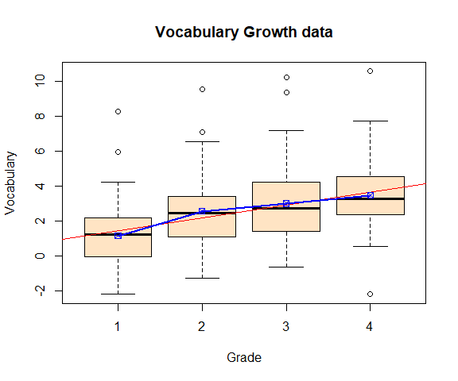
Figure 3.1: Boxplots of Vocabulary score by Grade, with linear regression line (red) and lines connecting grade means (blue).
The standard univariate and multivariate tests for the differences in vocabulary with grade can be carried out as follows. First, we fit the basic MLM with an intercept only on the right-hand side of the model, since there are no between-S effects. The intercepts estimate the means at each grade level, \(\mu_8 , \dots , \mu_{11}\).
(Vocab.mod <- lm(cbind(grade8, grade9, grade10, grade11) ~ 1, data = VocabGrowth))
#>
#> Call:
#> lm(formula = cbind(grade8, grade9, grade10, grade11) ~ 1, data = VocabGrowth)
#>
#> Coefficients:
#> grade8 grade9 grade10 grade11
#> (Intercept) 1.14 2.54 2.99 3.47We could test the multivariate hypothesis that all means are simultaneously zero, \(\mu_8 = \mu_9 = \mu_{10} = \mu_{11} = 0\). This point hypothesis is the simplest case of a multivariate test under (1.2), with \(\mathbf{L} = \mathbf{I}\).
(Vocab.aov0 <- Anova(Vocab.mod, type = "III"))
#>
#> Type III MANOVA Tests: Pillai test statistic
#> Df test stat approx F num Df den Df Pr(>F)
#> (Intercept) 1 0.8577 90.38 4 60 <2e-16 ***
#> ---
#> Signif. codes: 0 '***' 0.001 '**' 0.01 '*' 0.05 '.' 0.1 ' ' 1This hypothesis tests that the vocabulary means are all at the arbitrary origin for the scale. Often this test is not of direct interest, but it serves to illustrate the \(\mathbf{H}\) and \(\mathbf{E}\) matrices involved in any multivariate test, their representation by HE plots, and how we can extend these plots to the repeated measures case.
The \(\mathbf{H}\) and \(\mathbf{E}\) matrices can be printed with summary(Vocab.aov0),
or extracted from the Anova.mlm object. In this case, \(\mathbf{H}\)
is simply \(n \overline{\mathbf{y}} \overline{\mathbf{y}}^\top\) and \(\mathbf{E}\) is the sum
of squares and crossproducts of deviations from the column means,
\(\sum_{i=1}^{n}(\mathbf{y}_i-\overline{\mathbf{y}})(\mathbf{y}_i-\overline{\mathbf{y}})^\top\).
Vocab.aov0$SSP # H matrix
#> $`(Intercept)`
#> grade8 grade9 grade10 grade11
#> grade8 82.810 185.037 217.547 252.525
#> grade9 185.037 413.461 486.104 564.262
#> grade10 217.547 486.104 571.509 663.398
#> grade11 252.525 564.262 663.398 770.063
Vocab.aov0$SSPE # E matrix
#> grade8 grade9 grade10 grade11
#> grade8 225.086 201.133 223.843 179.950
#> grade9 201.133 273.850 223.515 191.729
#> grade10 223.843 223.515 296.321 213.249
#> grade11 179.950 191.729 213.249 233.848The HE plot for the Vocab.mod model shows the test for the (Intercept) term
(all means = 0). To emphasize that the test is assessing the (squared)
distance of \(\bar{\mathbf{y}}\) from \(\mathbf{0}\), in relation to
the covariation of observations around the grand mean, we mark the point hypothesis
\(H_0 = (0, 0)\) with mark.H0().
Here we show the HE plot for the grade8 and grade9 variables in
Figure 3.2. The \(\mathbf{E}\) ellipse reflects
the positive correlation of vocabulary scores across these two
grades, but also shows that variability is greater in Grade 8 than in Grade 9.
Its position relative to (0,0) indicates that both means are
positive, with a larger mean at Grade 9 than Grade 8.
heplot(Vocab.mod, terms = "(Intercept)", type = "III", fill = TRUE)
mark.H0(0, 0)
title(expression(paste("Multivariate test of ", H[0], " : ", bold(mu) == 0)))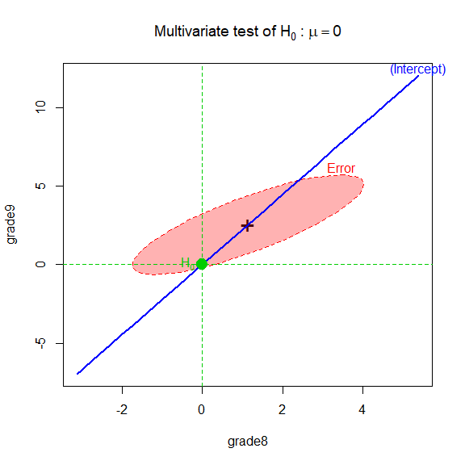
Figure 3.2: HE plot for Vocabulary data, for the MANOVA test of \(H_0 : \boldsymbol{\mu}_y = \mathbf{0}\). The size of the (degenerate) ellipse for the intercept term relative to that for Error gives the strength of evidence for the difference between the sample mean (marked by \(+\)) and the means under \(H_0\) (marked by the cross-hairs and green dot). The projection of this \(\mathbf{H}\) ellipse outside the \(\mathbf{E}\) ellipse signals that this \(H_0\) is clearly rejected.
The \(\mathbf{H}\) ellipse plots as a degenerate line because the \(\mathbf{H}\) matrix has
rank 1 (1 df for the MANOVA test of the Intercept).
The fact that the \(\mathbf{H}\) ellipse extends outside the \(\mathbf{E}\) ellipse (anywhere)
signals that this \(H_0\) is clearly rejected (for some linear combination of the
response variables). Moreover, the projections of the \(\mathbf{H}\) and \(\mathbf{E}\)
ellipses on the grade8 and grade9 axes, showing \(\mathbf{H}\) widely outside
\(\mathbf{E}\), signals that the corresponding univariate hypotheses, \(\mu_8=0\) and
\(\mu_9=0\) would also be rejected.
3.1 Testing within-S effects
For the Anova() function, the model for within-S effects, giving rise to the
\(\mathbf{M}\) matrices in (2.1), is specified through the arguments idata
(a data frame giving the factor(s) used in the intra-subject model)
and idesign (a model formula specifying the intra-subject design).
That is, if \(\mathbf{Z} = [ \mathtt{idata} ]\), the \(\mathbf{M}\) matrices
for different intra-subject terms are generated from columns of \(\mathbf{Z}\)
indexed by the terms in idesign, with factors and interactions
expanded to contrasts in the same way that the design matrix \(\mathbf{X}\) is generated
from the between-S design formula.
Thus, to test the within-S effect of grade, we need to construct a grade
variable for the levels of grade and use this as a model formula,
idesign = ~grade to specify the within-S design in the call to Anova().
idata <- data.frame(grade = ordered(8:11))
(Vocab.aov <- Anova(Vocab.mod, idata = idata, idesign = ~grade, type = "III"))
#>
#> Type III Repeated Measures MANOVA Tests: Pillai test statistic
#> Df test stat approx F num Df den Df Pr(>F)
#> (Intercept) 1 0.6529 118.50 1 63 4.12e-16 ***
#> grade 1 0.8258 96.38 3 61 < 2e-16 ***
#> ---
#> Signif. codes: 0 '***' 0.001 '**' 0.01 '*' 0.05 '.' 0.1 ' ' 1As shown in Table 2.1, any such within-S test is effectively carried out
using a transformation \(\mathbf{Y}\) to \(\mathbf{Y M}\), where the columns of
\(\mathbf{M}\) provide contrasts among the grades. For the overall test of grade,
any set of 3 linearly independent contrasts will give the same
test statistics, though, of course the interpretation of the parameters will differ.
Specifying grade as an ordered factor (grade = ordered(8:11)) will cause Anova()
to use the polynomial contrasts shown in \(\mathbf{M}_{poly}\) below.
\[
\mathbf{M}_{poly} =
\begin{pmatrix}
-3 & 1 & -1 \\
-1 & -1 & 3 \\
1 & -1 & -3 \\
3 & 1 & 1
\end{pmatrix}
\quad\quad
\mathbf{M}_{first} =
\begin{pmatrix}
-1 & -1 & -1 \\
1 & 0 & 0 \\
0 & 1 & 0 \\
0 & 0 & 1
\end{pmatrix}
\quad\quad
\mathbf{M}_{last} =
\begin{pmatrix}
1 & 0 & 0 \\
0 & 1 & 0 \\
0 & 0 & 1 \\
-1 & -1 & -1
\end{pmatrix}
\]
Alternatively, \(\mathbf{M}_{first}\) would test the gains in vocabulary
between grade 8 (baseline) and each of grades 9–11, while
\(\mathbf{M}_{last}\) would test the difference between each of grades 8–10 from grade 11.
(In R, these contrasts are constructed with
M.first <- contr.sum(factor(11:8))[4:1, 3:1], and
M.last <- contr.sum(factor(8:11)) respectively.)
In all cases, the hypothesis of no difference among the means across grade is
transformed to an equivalent multivariate point hypothesis,
\(\mathbf{M}^\top \boldsymbol{\mu}_y = \mathbf{0}\), such as we visualized in
Figure 3.2.
To see what idata and idesign do, we can carry out this transformation explicitly,
\(\mathbf{Y} \mapsto \mathbf{Y M}\), using \(\mathbf{M}_{poly}\) (in its normalized form,
from poly()) to give scores for the linear, quadratic and cubic trends of each student.
Using \(\mathbf{M}_{poly}\), the MANOVA test for the grade effect is then testing
\(H_0 : \mathbf{M}^\top \boldsymbol{\mu}_y = \mathbf{0} \leftrightarrow \mu_{Lin} = \mu_{Quad} = \mu_{Cubic} = 0\).
That is, the means across grades 8–11 are equal if and only if
their linear, quadratic and cubic trends are simultaneously zero.
trends <- as.matrix(VocabGrowth) %*% poly(8:11, degree = 3)
colnames(trends) <- c("Linear", "Quad", "Cubic")
# test all trend means = 0 == Grade effect
within.mod <- lm(trends ~ 1)
Anova(within.mod, type = "III")
#>
#> Type III MANOVA Tests: Pillai test statistic
#> Df test stat approx F num Df den Df Pr(>F)
#> (Intercept) 1 0.8258 96.38 3 61 <2e-16 ***
#> ---
#> Signif. codes: 0 '***' 0.001 '**' 0.01 '*' 0.05 '.' 0.1 ' ' 1The test of the (Intercept) term in within.mod is identical to the test of grade
in Vocab.mod above. So the within-S test of grade is just a test of the means of the
transformed responses, \(\mathbf{Y M}\).
We can show this test visually. Figure 3.3(a)
shows a scatterplot of the transformed linear and quadratic trend scores,
overlaid with a 68% data ellipse.
Figure 3.3(b) is the corresponding HE plot for the effect of grade.
It is drawn directly from Vocab.mod: iterm = "grade" selects the within-S term to
show, and heplot() does the transformation to \(\mathbf{Y M}\) and marks the point
\(H_0\) itself. The axes are the linear (grade.L) and quadratic (grade.Q) contrasts
for grade.
Thus, we can see that the \(\mathbf{E}\) ellipse is simply the data ellipse of the
transformed vocabulary scores; its orientation indicates a
slight tendency for those with greater slopes (gain in vocabulary)
to have greater curvatures (leveling off earlier).
op <- par(mfrow = c(1, 2))
dataEllipse(trends[, 1:2], xlim = c(-4, 8), ylim = c(-3, 3), levels = 0.68,
main = "(a) Data ellipse")
mark.H0(0, 0)
heplot(Vocab.mod, type = "III", idata = idata, idesign = ~grade, iterm = "grade",
col = c("red", "blue"), xlim = c(-4, 8), ylim = c(-3, 3), fill = TRUE,
main = "(b) HE plot for Grade effect")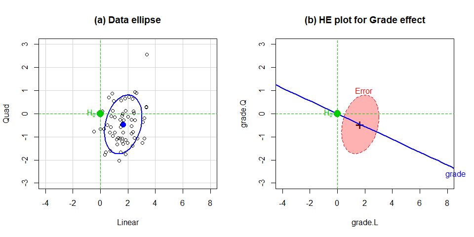
Figure 3.3: Plots of linear and quadratic trend scores for the Vocabulary data. (a) Scatterplot with 68% data ellipse; (b) HE plot for the effect of Grade. As in Figure 3.2, the size of the \(\mathbf{H}\) ellipse for Grade relative to the \(\mathbf{E}\) ellipse shows the strength of evidence against \(H_0\).
par(op)We interpret Figure 3.3(b) as follows, bearing in mind that we are looking at the data in the transformed space (\(\mathbf{Y M}\)) of the linear (slopes) and quadratic (curvatures) of the original data (\(\mathbf{Y}\)). The mean slope is positive while the mean quadratic trend is negative. That is, overall, vocabulary increases with Grade, but at a decreasing rate. The \(\mathbf{H}\) ellipse plots as a degenerate line because the \(\mathbf{H}\) matrix has rank 1 (1 df for the MANOVA test of the Intercept). Its projection outside the \(\mathbf{E}\) ellipse shows a highly significant rejection of the hypothesis of equal means over Grade.
In such simple cases, traditional plots (boxplots, or plots of means with error bars) are easier to interpret. HE plots gain advantages in more complex designs (two or more between- or within-S factors, multiple responses), where they provide visual summaries of the information used in the multivariate hypothesis tests.
4 Between- and within-S effects
When there are both within- and between-S effects, the multivariate and
univariate hypotheses tests can all be obtained together using Anova()
with idata and idesign specifying the within-S levels
and the within-S design, as shown above.
linearHypothesis() can be used to test arbitrary contrasts in the
within- or between-S effects.
HE plots for between-S effects are drawn in the space of the response variables,
just as for any MANOVA. HE plots for within-S effects and their interactions with
between-S effects use the same idata and idesign, with iterm to choose the
within-S term.
To illustrate, we use the data from O’Brien & Kaiser (1985) contained in the
data frame OBrienKaiser in the carData package.
The data are from an imaginary study in which 16 female and male subjects,
who are divided into three treatments, are measured at a pretest, posttest, and a
follow-up session; during each session, they are measured at five occasions at intervals
of one hour. The design, therefore, has two between-subject and two within-subject factors.
For simplicity here, we initially collapse over the five occasions, and consider just
the within-S effect of session, called session in the analysis below.
# simplified analysis of OBrienKaiser data, collapsing over hour
OBK <- OBrienKaiser
OBK$pre <- rowMeans(OBK[, 3:7])
OBK$post <- rowMeans(OBK[, 8:12])
OBK$fup <- rowMeans(OBK[, 13:17])
# remove separate hour scores
OBK <- OBK[, -(3:17)]Note that the between-S design is unbalanced (so tests based on Type II sum of squares and crossproducts are preferred, because they conform to the principle of marginality).
table(OBK$gender, OBK$treatment)
#>
#> control A B
#> F 2 2 4
#> M 3 2 3The factors gender and treatment were specified with
the following contrasts, \(\mathbf{L}_{gender}\), and \(\mathbf{L}_{treatment}\), shown below.
The contrasts for treatment are nested (Helmert) contrasts
testing a comparison of the control group with the average of treatments A and B
(treatment1) and the difference between treatments A and B (treatment2).
contrasts(OBK$gender)
#> [,1]
#> F 1
#> M -1
contrasts(OBK$treatment)
#> [,1] [,2]
#> control -2 0
#> A 1 -1
#> B 1 1We first fit the general MANOVA model for the three repeated measures in relation to the between-S factors. As before, this just establishes the model for the between-S effects.
# MANOVA model
mod.OBK <- lm(cbind(pre, post, fup) ~ treatment * gender, data = OBK)
mod.OBK
#>
#> Call:
#> lm(formula = cbind(pre, post, fup) ~ treatment * gender, data = OBK)
#>
#> Coefficients:
#> pre post fup
#> (Intercept) 4.4722 5.7361 6.2917
#> treatment1 0.1111 0.8264 0.9792
#> treatment2 -0.4167 0.0625 0.0208
#> gender1 -0.4722 -0.6528 -0.7083
#> treatment1:gender1 -0.3611 -0.5347 -0.1875
#> treatment2:gender1 0.6667 0.8125 0.8542If we regarded the repeated measure effect of session as equally
spaced, we could simply use polynomial contrasts to examine linear (slope)
and quadratic (curvature) effects of time. Here, it makes more sense to
use profile contrasts, testing (post - pre) and (fup - post).
session <- ordered(c("pretest", "posttest", "followup"),
levels = c("pretest", "posttest", "followup"))
contrasts(session) <- matrix(c(-1, 1, 0,
0, -1, 1), ncol = 2)
session
#> [1] pretest posttest followup
#> attr(,"contrasts")
#> [,1] [,2]
#> pretest -1 0
#> posttest 1 -1
#> followup 0 1
#> Levels: pretest < posttest < followup
idata <- data.frame(session)The multivariate tests for all between- and within-S effects are then calculated as follows:
# Multivariate tests for repeated measures
aov.OBK <- Anova(mod.OBK, idata = idata, idesign = ~session, test = "Roy")
aov.OBK
#>
#> Type II Repeated Measures MANOVA Tests: Roy test statistic
#> Df test stat approx F num Df den Df Pr(>F)
#> (Intercept) 1 31.83 318.3 1 10 6.53e-09 ***
#> treatment 2 0.93 4.6 2 10 0.037687 *
#> gender 1 0.26 2.6 1 10 0.140974
#> treatment:gender 2 0.57 2.9 2 10 0.104469
#> session 1 5.69 25.6 2 9 0.000193 ***
#> treatment:session 2 2.13 10.7 2 10 0.003309 **
#> gender:session 1 0.05 0.2 2 9 0.819997
#> treatment:gender:session 2 0.42 2.1 2 10 0.175303
#> ---
#> Signif. codes: 0 '***' 0.001 '**' 0.01 '*' 0.05 '.' 0.1 ' ' 1It is useful to point out here that the default print() method
for Anova.mlm objects, as shown above, gives an optimally compact summary for
all between- and within-S effects, using a given test statistic,
yet all details and other test statistics are available using the summary()
method. For example, using summary(aov.OBK) as shown below, we can display all the
multivariate tests together with the \(\mathbf{H}\) and \(\mathbf{E}\) matrices,
and/or all the univariate tests for the traditional univariate
mixed model, under the assumption of sphericity
and with Greenhouse-Geisser and Huynh-Feldt corrected \(F\) tests.
To conserve space the results are not shown here.
# All multivariate tests
summary(aov.OBK, univariate = FALSE)
# Univariate tests for repeated measures
summary(aov.OBK, multivariate = FALSE)OK, now it’s time to understand the nature of these effects.
Ordinarily, from a data-analytic point of view, I would show traditional
plots of means and other measures (as in Figure 3.1)
or their generalizations in effect plots (Fox, 1987; Fox & Hong, 2009).
But I’m not going to do that here. Instead, I’d like for you to understand
how HE plots provide a compact visual summary of an MLM,
mirroring the tabular presentation from Anova(mod.OBK) above,
but which also reveals the nature of effects.
Here, you have to bear in mind that between-S effects are displayed most
naturally in the space of the response variables, while within-S effects
are most easily seen in the contrast space of transformed responses (\(\mathbf{Y M}\)).
HE plots for between-S effects can be displayed for any pair of
responses with heplot(). Figure 4.1 shows this
for pre and post. By default, \(\mathbf{H}\) ellipses for all model terms (excluding
the intercept) are displayed. Additional MLM tests can also be displayed using the
hypotheses argument; here we specify the two contrasts for the treatment effect
shown above as contrasts(OBK$treatment).
# HE plots for Between-S effects
heplot(mod.OBK, hypotheses = c("treatment1", "treatment2"),
col = c("red", "black", "blue", "brown", "gray40", "gray40"),
hyp.labels = c("(A,B)-Control", "A-B"),
main = "Between-S effects and contrasts")
lines(c(3, 7), c(3, 7), col = "green")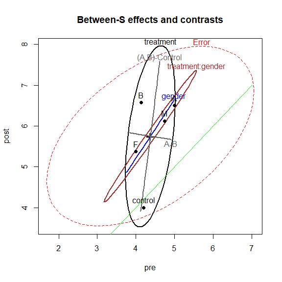
Figure 4.1: HE plot for the mod.OBK repeated measures model, showing between-S effects and contrasts in the space of the pre and post variables. Main effect means of the treatment (A, B, Control) and gender (M, F) groups are marked by points. Contrasts among the treatment groups appear as lines labeled at one extreme. The green line of unit slope shows equality of pre = post.
In Figure 4.1, we see that the treatment effect is significant,
and the large vertical extent of this \(\mathbf{H}\) ellipse shows
this is largely attributable to the differences among groups in the Post session.
Moreover, the main component of the treatment effect is the contrast between
the Control group and groups A & B, which outperform the Control group at Post test.
The effect of gender is not significant, but the HE plot shows that
males are higher than females at both Pre and Post tests.
Likewise, the treatment:gender interaction fails significance, but
the orientation of the \(\mathbf{H}\) ellipse for this effect can be interpreted as
showing that the differences among the treatment groups are larger for males than
for females. Finally, the line of unit slope shows that for all effects, scores are
greater on post than pre.
Using heplot3d(mod.OBK, ...) gives an interactive 3D version of
Figure 4.1 for pre, post, and fup,
that can be rotated and zoomed, or played as an animation.
heplot3d(mod.OBK, hypotheses = c("treatment1", "treatment2"),
col = c("pink", "black", "blue", "brown", "gray40", "gray40"),
hyp.labels = c("(A,B)-Control", "A-B"))
# rotate around y axis
play3d(spin3d(axis = c(0, 1, 0)), duration = 12)Alternatively, all pairwise HE plots for the session means can be shown using pairs()
for the mlm object mod.OBK, with the result shown in Figure 4.2.
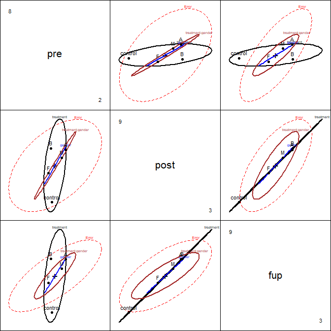
Figure 4.2: HE plot for the mod.OBK repeated measures model, showing between-S effects for all pairs of sessions. The panel in row 2, column 1 is identical to that shown separately in Figure 4.1.
Here we see that (a) the treatment effect is largest in the combination of post-test and follow up; (b) this 2 \(df\) test is essentially 1-dimensional in this view, i.e., treatment means at post-test and follow up are nearly perfectly correlated; (c) the superior performance of males relative to females, while not significant, holds up over all three sessions.
The HE plot for within-S effects (Figure 4.3) uses the same idata and
idesign as Anova(), with iterm = "session". The axes are now the two (profile)
contrasts for session, post - pre and fup - post, i.e., the columns of
\(\mathbf{Y M}_{session}\). From the schematic summary in Table 2.1, the
\(\mathbf{H}\) ellipses for the between-S terms treatment, gender and
treatment:gender in this space are those for their interactions with session, and
the test of no change over sessions (the intercept, in this space) is that for
session itself. heplot() labels the terms accordingly, and marks the point
\(H_0\) of no difference over sessions.
# HE plots for Within-S effects
heplot(mod.OBK, idata = idata, idesign = ~session, iterm = "session",
col = c("red", "black", "blue", "brown"),
xlab = "Post - Pre", ylab = "Fup - Post",
xlim = c(-2, 4), ylim = c(-2, 3),
main = "Within-S effects: Session * (Treat*Gender)")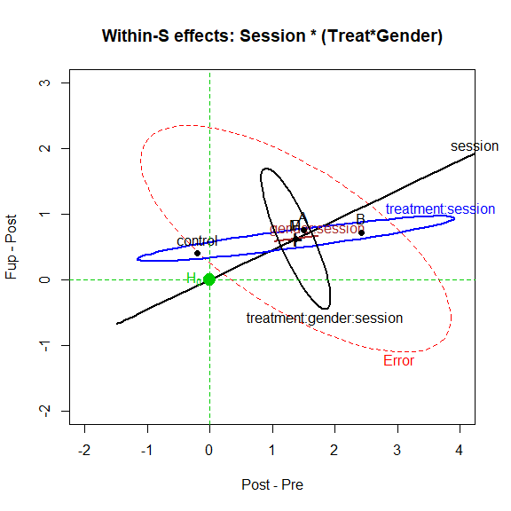
Figure 4.3: HE plot for the mod.OBK model, showing within-S effects in the space of contrasts among sessions. The point labeled \(H_0\) here marks the comparison point for no difference over session in contrast space.
Figure 4.3 provides an interpretation of the within-S effects
in the MANOVA table shown above for Anova(mod.OBK).
We can see that the effects of session and treatment:session are significant.
More importantly, for both of these, but the interaction in particular,
the significance of the effect is more attributable to the post - pre difference
than to fup - post.
4.1 Higher-order designs
The scheme described above and the obvious generalization of Table 2.1
easily accommodates designs with two or more within-S factors.
Any number of between-S factors are handled automatically, by
the model formula for between-S effects specified in the lm() call, e.g.,
~ treatment * gender.
For example, for the O’Brien-Kaiser data with session and hour
as two within-S factors, first create a data frame, within specifying the values of
these factors for the \(3 \times 5\) combinations.
session <- factor(rep(c("pretest", "posttest", "followup"), c(5, 5, 5)),
levels = c("pretest", "posttest", "followup"))
contrasts(session) <- matrix(c(-1, 1, 0,
0, -1, 1), ncol = 2)
hour <- ordered(rep(1:5, 3))
within <- data.frame(session, hour)The within data frame looks like this:
str(within)
#> 'data.frame': 15 obs. of 2 variables:
#> $ session: Factor w/ 3 levels "pretest","posttest",..: 1 1 1 1 1 2 2 2 2 2 ...
#> ..- attr(*, "contrasts")= num [1:3, 1:2] -1 1 0 0 -1 1
#> .. ..- attr(*, "dimnames")=List of 2
#> .. .. ..$ : chr [1:3] "pretest" "posttest" "followup"
#> .. .. ..$ : NULL
#> $ hour : Ord.factor w/ 5 levels "1"<"2"<"3"<"4"<..: 1 2 3 4 5 1 2 3 4 5 ...
within
#> session hour
#> 1 pretest 1
#> 2 pretest 2
#> 3 pretest 3
#> 4 pretest 4
#> 5 pretest 5
#> 6 posttest 1
#> 7 posttest 2
#> 8 posttest 3
#> 9 posttest 4
#> 10 posttest 5
#> 11 followup 1
#> 12 followup 2
#> 13 followup 3
#> 14 followup 4
#> 15 followup 5The repeated measures MANOVA analysis can then be carried out as follows:
mod.OBK2 <- lm(cbind(pre.1, pre.2, pre.3, pre.4, pre.5,
post.1, post.2, post.3, post.4, post.5,
fup.1, fup.2, fup.3, fup.4, fup.5) ~ treatment * gender,
data = OBrienKaiser)
(aov.OBK2 <- Anova(mod.OBK2, idata = within, idesign = ~session * hour, test = "Roy"))
#>
#> Type II Repeated Measures MANOVA Tests: Roy test statistic
#> Df test stat approx F num Df den Df Pr(>F)
#> (Intercept) 1 31.83 318.3 1 10 6.53e-09 ***
#> treatment 2 0.93 4.6 2 10 0.037687 *
#> gender 1 0.26 2.6 1 10 0.140974
#> treatment:gender 2 0.57 2.9 2 10 0.104469
#> session 1 5.69 25.6 2 9 0.000193 ***
#> treatment:session 2 2.13 10.7 2 10 0.003309 **
#> gender:session 1 0.05 0.2 2 9 0.819997
#> treatment:gender:session 2 0.42 2.1 2 10 0.175303
#> hour 1 14.31 25.0 4 7 0.000304 ***
#> treatment:hour 2 0.23 0.5 4 8 0.758592
#> gender:hour 1 0.41 0.7 4 7 0.602374
#> treatment:gender:hour 2 0.71 1.4 4 8 0.308786
#> session:hour 1 1.22 0.5 8 3 0.832452
#> treatment:session:hour 2 0.58 0.3 8 4 0.936351
#> gender:session:hour 1 2.28 0.9 8 3 0.620208
#> treatment:gender:session:hour 2 0.80 0.4 8 4 0.875598
#> ---
#> Signif. codes: 0 '***' 0.001 '**' 0.01 '*' 0.05 '.' 0.1 ' ' 1Note that the test statistics for treatment, gender, session and all interactions
among them are identical to what was found in the simplified analysis above.
Among the effects including hour, only the main effect is significant here.
The following \(\mathbf{M}\) matrices, corresponding to profile contrasts for
session and polynomial contrasts for hour are used internally in
Anova() in calculating these effects (shown here as integers,
rather than in normalized form).
\[
\mathbf{M}_{session} =
\begin{pmatrix}
-1 & 0 \\
1 & -1 \\
0 & 1
\end{pmatrix}
\quad\quad
\mathbf{M}_{hour} =
\begin{pmatrix}
-2 & 2 & -1 & 1 \\
-1 & -1 & 2 & -4 \\
0 & -2 & 0 & 6 \\
1 & -1 & -2 & -4 \\
2 & 2 & 1 & 1
\end{pmatrix}
\]
To apply to the 15 columns of \(\mathbf{Y}\), these are expanded as Kronecker
products with the unit vector, as in (2.4),
\[
\mathbf{M}_s = \mathbf{M}_{session} \otimes \mathbf{1}_5 \; , \quad\quad
\mathbf{M}_h = \mathbf{1}_3 \otimes \mathbf{M}_{hour} \; ,
\]
and tests involving the interaction session:hour use
\(\mathbf{M}_{session} \otimes \mathbf{M}_{hour}\).
heplot() constructs these from idata and idesign, just as Anova() does.
We can plot these effects for the linear and quadratic contrasts of hour,
representing within-session slope and curvature, using iterm = "hour".
Figure 4.4 is produced as shown below. Here we use
idesign = ~hour, so that only hour and its interactions with the between-S terms are
shown; with idesign = ~session * hour, the session:hour terms would be shown as well.
As shown by the Anova(mod.OBK2, ...) above, all interactions with hour are small,
and so these appear wholly contained within the \(\mathbf{E}\) ellipse.
In particular, there are no differences among groups (treatment \(\times\) gender) in the
slopes or curvatures over hour. For the main effect of hour,
the linear effect is almost exactly zero, while the quadratic effect is huge.
colors <- c("red", "black", "blue", "brown", "purple")
heplot(mod.OBK2, idata = within, idesign = ~hour, iterm = "hour", col = colors)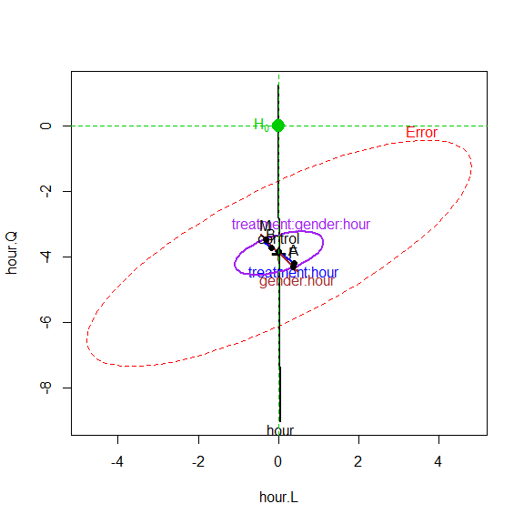
Figure 4.4: HE plot for the mod.OBK2 repeated measures model, showing within-S effects for linear and quadratic contrasts in hour. As in Figure 4.3, we are viewing hypothesis and error variation in the transformed space of the repeated measures contrasts, here given by \(\mathbf{M}_h\).
The pairs() function shows these effects (Figure 4.5) for all contrasts
in hour. All interactions with hour are small and non-significant, and stay close to
the centroid in every panel. The main additional message here
is that the effects of hour are more complex than just the large quadratic component
we saw in Figure 4.4.
pairs(mod.OBK2, idata = within, idesign = ~hour, iterm = "hour", col = colors)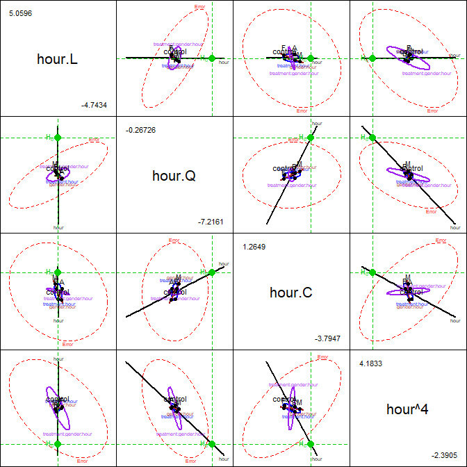
Figure 4.5: HE plot for the mod.OBK2 repeated measures model, showing within-S effects for all pairs of contrasts in hour.
4.2 Unequally spaced occasions
When the within-S factor is time, the occasions are often not equally spaced.
Polynomial contrasts should then use the actual times, so that the linear,
quadratic, … components refer to trends over time rather than over the order
of the occasions. This only requires setting the contrasts for the within-S factor in
idata, using contr.poly() with the scores argument.
The Phosphate data give plasma inorganic phosphate (mg/dl) for 13 control and 20
obese patients, measured at 8 times from 0 to 5 hours after an oral glucose challenge
(Rencher & Christensen, 2012; Zerbe, 1979). The times are 0, 0.5, 1, 1.5, 2, 3, 4 and 5 hours.
Figure 4.6 shows the mean profiles. Both groups show a U-shaped curve
over time, but the controls dip more deeply and earlier than the obese patients.
hours <- c(0, 0.5, 1, 1.5, 2, 3, 4, 5)
resp <- paste0("hr", hours)
means <- aggregate(Phosphate[, resp], list(group = Phosphate$group), mean)
matplot(hours, t(means[, resp]), type = "b", pch = 16, lty = 1, lwd = 2,
col = c("blue", "red"),
xlab = "Hours after glucose challenge",
ylab = "Mean plasma phosphate (mg/dl)")
legend("top", legend = means$group, col = c("blue", "red"),
lty = 1, pch = 16, bty = "n")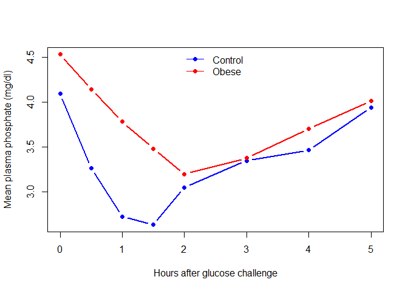
Figure 4.6: Mean profiles of plasma phosphate for the control and obese groups, plotted against the actual times after the glucose challenge.
The within-S design uses orthogonal polynomials in the actual hours:
idata <- data.frame(hour = ordered(hours))
contrasts(idata$hour) <- contr.poly(8, scores = hours)
phos.mod <- lm(cbind(hr0, hr0.5, hr1, hr1.5, hr2, hr3, hr4, hr5) ~ group,
data = Phosphate)
Anova(phos.mod, idata = idata, idesign = ~hour)
#>
#> Type II Repeated Measures MANOVA Tests: Pillai test statistic
#> Df test stat approx F num Df den Df Pr(>F)
#> (Intercept) 1 0.9790 1446.0 1 31 < 2e-16 ***
#> group 1 0.1568 5.8 1 31 0.022550 *
#> hour 1 0.9157 38.8 7 25 7.02e-12 ***
#> group:hour 1 0.6166 5.7 7 25 0.000482 ***
#> ---
#> Signif. codes: 0 '***' 0.001 '**' 0.01 '*' 0.05 '.' 0.1 ' ' 1The group:hour interaction is highly significant: the two groups have different
profiles over time. But this is a 7 df test, in the space of the seven polynomial
components of hour. Which components are responsible? A univariate look at the group
differences in each component, the columns of \(\mathbf{Y M}\), shows that the groups differ
in the linear, cubic and quartic components, but not at all in the quadratic one.
YM <- as.matrix(Phosphate[, resp]) %*% contrasts(idata$hour)
round(t(sapply(colnames(YM), function(k)
coef(summary(lm(YM[, k] ~ Phosphate$group)))[2, c("t value", "Pr(>|t|)")])), 4)
#> t value Pr(>|t|)
#> .L -3.3184 0.0023
#> .Q -0.0017 0.9986
#> .C 3.8870 0.0005
#> ^4 -3.9622 0.0004
#> ^5 -0.6206 0.5394
#> ^6 1.9209 0.0640
#> ^7 1.0967 0.2812The curves are equally U-shaped, and differ in where and how sharply they dip.
HE plots show this. In the space of the linear and quadratic components
(Figure 4.7(a)), the line for group:hour is horizontal: the group
means differ only on hour.L. With the linear and cubic components
(Figure 4.7(b)), the group means differ on both.
op <- par(mfrow = c(1, 2))
heplot(phos.mod, idata = idata, idesign = ~hour, iterm = "hour",
variables = c("hour.L", "hour.Q"), fill = TRUE, fill.alpha = 0.1,
main = "(a) Linear and quadratic")
heplot(phos.mod, idata = idata, idesign = ~hour, iterm = "hour",
variables = c("hour.L", "hour.C"), fill = TRUE, fill.alpha = 0.1,
main = "(b) Linear and cubic")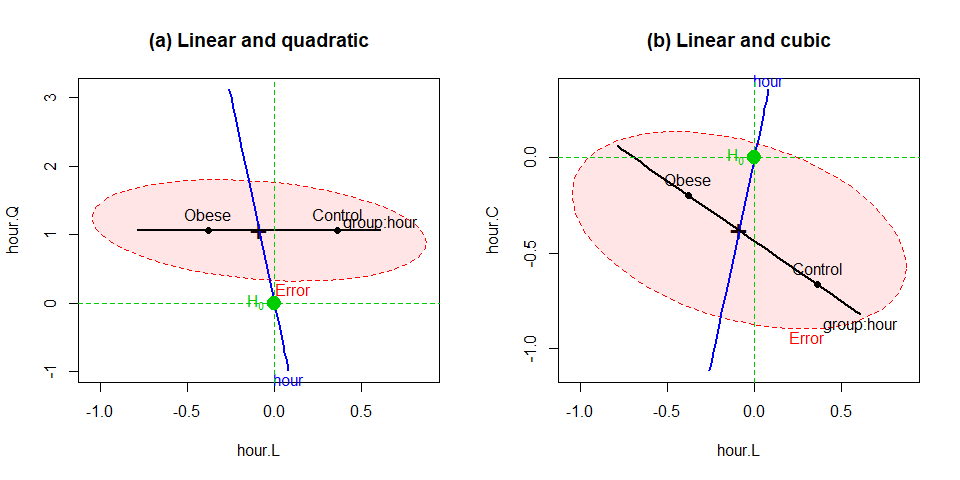
Figure 4.7: HE plots for within-S effects in the Phosphate data, in the space of polynomial contrasts for the actual times. (a) Linear and quadratic components; (b) linear and cubic components. The group means are marked.
par(op)Note that the \(\mathbf{H}\) ellipse (a line, since group has 1 df) for group:hour
stays well inside the \(\mathbf{E}\) ellipse in (a), and only just reaches its edge in (b),
although the test is highly significant. Roy’s test rejects \(H_0\) when the \(\mathbf{H}\) ellipsoid extends outside the
\(\mathbf{E}\) ellipsoid in some direction in the full 7-dimensional space; a
2D view shows only a projection, and here the effect is spread over several
components, none of which is large on its own. The pairs() plot for the first four
components (Figure 4.8) shows more of it.
pairs(phos.mod, idata = idata, idesign = ~hour, iterm = "hour",
variables = 1:4, fill = TRUE, fill.alpha = 0.1)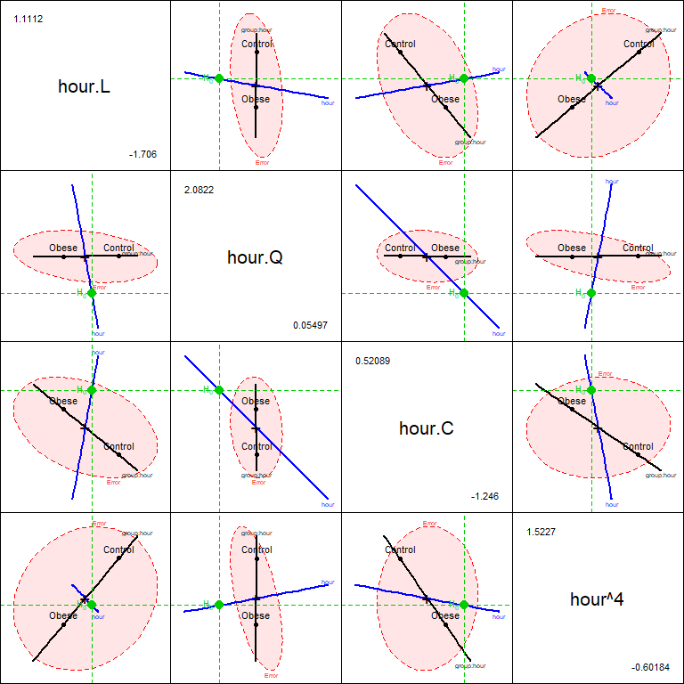
Figure 4.8: HE plot matrix for within-S effects in the Phosphate data, for the first four polynomial components of time.
5 Doubly-multivariate designs
In the designs discussed above the same measure is observed on all occasions. Sometimes, there are two or more different measures, \(Y_1, Y_2, \dots\), observed at each occasion, for example response speed and accuracy. In these cases, researchers often carry out separate repeated measures analyses for each measure. However the tests of between-S effects and each within-S effect can also be carried out as multivariate tests of \(Y_1, Y_2, \dots\) simultaneously, and these tests are often more powerful, particularly when the effects for the different measures are weak, but correlated.
In the present context, such doubly-multivariate designs can be easily handled in principle by treating the multiple measures as an additional within-S factor, but using an identity matrix as the \(\mathbf{M}\) matrix in forming the linear hypotheses to be tested via (2.1). For example, with two measures, \(Y_1, Y_2\) observed on three repeated sessions, the full \(\mathbf{M}\) matrix for the design is generated as in (2.4) as \[\begin{equation} \mathbf{M}_{CM} = (\mathbf{1}, \mathbf{M}_{session} ) \otimes \mathbf{I}_2 = \begin{pmatrix} 1 & -1 & 0 \\ 1 & 1 & -1 \\ 1 & 0 & 1 \end{pmatrix} \otimes \begin{pmatrix} 1 & 0 \\ 0 & 1 \end{pmatrix} \; . \tag{5.1} \end{equation}\]
In R, we can express this as follows, using M.measure to represent \(Y_1, Y_2\).
M.session <- matrix(c(-1, 1, 0,
0, -1, 1), ncol = 2,
dimnames = list(c("pre", "post", "fup"), c("s1", "s2")))
M.measure <- diag(2)
rownames(M.measure) <- colnames(M.measure) <- c("Y1", "Y2")
kronecker(cbind(1, M.session), M.measure, make.dimnames = TRUE)
#> :Y1 :Y2 s1:Y1 s1:Y2 s2:Y1 s2:Y2
#> pre:Y1 1 0 -1 0 0 0
#> pre:Y2 0 1 0 -1 0 0
#> post:Y1 1 0 1 0 -1 0
#> post:Y2 0 1 0 1 0 -1
#> fup:Y1 1 0 0 0 1 0
#> fup:Y2 0 1 0 0 0 1In the result, the first two columns correspond to the within-S Intercept term, and are used to test all between-S terms for \(Y_1, Y_2\) simultaneously. The remaining columns correspond to the session effect for both variables and all interactions with session.
A doubly-multivariate design can’t be described by idata and idesign, because the
within-S model differs for the two measures. Instead, Anova() and heplot() accept
the argument imatrix, a list of \(\mathbf{M}\) matrices, one for each within-S term.
The columns of each are contrasts among the response variables.
5.1 Example: Weight loss and self esteem
To illustrate, we consider the data frame WeightLoss, originally from Andrew Ainsworth,
giving (contrived) data on weight loss and measures of self esteem after each
of three months for 34 individuals, who were observed in one of
three groups: Control, Diet group, Diet + Exercise group.
The within-S factors are thus measure (wl, se) and month (1:3).
table(WeightLoss$group)
#>
#> Control Diet DietEx
#> 12 12 10
some(WeightLoss)
#> group wl1 wl2 wl3 se1 se2 se3
#> 1 Control 4 3 3 14 13 15
#> 5 Control 5 3 2 16 15 14
#> 11 Control 4 2 2 16 16 11
#> 14 Diet 5 4 1 13 14 15
#> 17 Diet 3 2 1 16 17 15
#> 18 Diet 5 5 4 13 11 18
#> 19 Diet 4 3 1 12 11 14
#> 24 Diet 7 4 3 16 14 18
#> 27 DietEx 9 7 3 13 12 17
#> 29 DietEx 3 5 1 13 13 16Because this design is complex, and to facilitate interpretation of the effects we will see in HE plots, it is helpful to view traditional plots of means with standard errors for both variables. These plots, shown in Figure 5.1,4 show that, for all three groups, the amount of weight lost each month declines, but only the Diet + Exercise group maintains substantial weight loss through month 2. For self esteem, all three groups have a U-shaped pattern over months, and by month 3, the groups are ordered Control < Diet < Diet + Exercise.
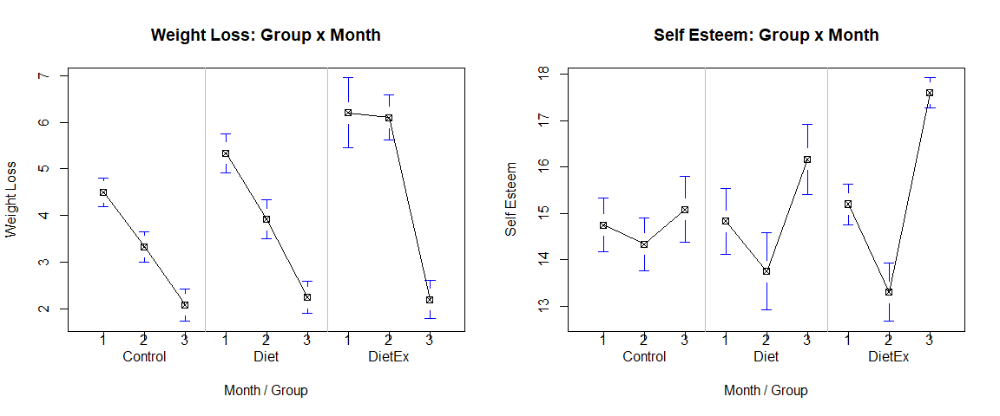
Figure 5.1: Means for weight loss and self esteem by group and month. Error bars show \(\pm 1\) standard error for each mean.
Research interest in the differences among groups would likely be focused on the
questions: (a) Do the two diet groups differ from the control group?
(b) Is there an additional effect of exercise, given diet?
These questions may be tested with the (Helmert) contrasts used below for group,
which are labeled group1 and group2 respectively.
contrasts(WeightLoss$group) <- matrix(c(-2, 1, 1,
0, -1, 1), ncol = 2)
(wl.mod <- lm(cbind(wl1, wl2, wl3, se1, se2, se3) ~ group, data = WeightLoss))
#>
#> Call:
#> lm(formula = cbind(wl1, wl2, wl3, se1, se2, se3) ~ group, data = WeightLoss)
#>
#> Coefficients:
#> wl1 wl2 wl3 se1 se2 se3
#> (Intercept) 5.3444 4.4500 2.1778 14.9278 13.7944 16.2833
#> group1 0.4222 0.5583 0.0472 0.0889 -0.2694 0.6000
#> group2 0.4333 1.0917 -0.0250 0.1833 -0.2250 0.7167A standard between-S MANOVA, ignoring the within-S structure, shows a highly significant
group effect.
Anova(wl.mod)
#>
#> Type II MANOVA Tests: Pillai test statistic
#> Df test stat approx F num Df den Df Pr(>F)
#> group 2 0.7255 2.562 12 54 0.00924 **
#> ---
#> Signif. codes: 0 '***' 0.001 '**' 0.01 '*' 0.05 '.' 0.1 ' ' 1As before, it is often useful to examine HE plots for pairs of variables in
this analysis before proceeding to the within-S analysis.
For example, Figure 5.2 shows the test of group and the two contrasts
for weight loss and for self esteem at months 1 and 2.
op <- par(mfrow = c(1, 2))
heplot(wl.mod, hypotheses = c("group1", "group2"),
xlab = "Weight Loss, month 1", ylab = "Weight Loss, month 2")
heplot(wl.mod, hypotheses = c("group1", "group2"), variables = 4:5,
xlab = "Self Esteem, month 1", ylab = "Self Esteem, month 2")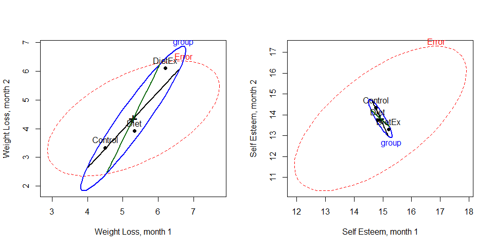
Figure 5.2: HE plot for the wl.mod MANOVA model, showing between-S effects for weight loss (left) and self esteem (right) at months 1 and 2.
par(op)This is helpful, but doesn’t illuminate the overall group effect for weight loss and
self esteem for all three months, and, of course cannot shed light on any interactions of
group with measure or month.
In the following discussion, we will assume that the researcher is particularly
interested in understanding the relation between weight loss and self esteem
as it is expressed in changes over time and differences among groups.
For the doubly-multivariate analysis, we define two \(\mathbf{M}\) matrices. For the
between-S effects, measure uses \(\mathbf{M} = \mathbf{I}_2 \otimes \mathbf{1}_3/3\),
so that the resulting scores are the means (not sums) over months for weight loss and
self esteem. For the within-S effects, month uses orthogonal polynomials for the
linear and quadratic trends over months, separately for each measure,
\(\mathbf{I}_2 \otimes \mathbf{M}_{poly}\).
M <- kronecker(diag(2), cbind(1/3, poly(1:3, degree = 2)))[, c(1, 4, 2, 3, 5, 6)]
dimnames(M) <- list(colnames(WeightLoss)[-1],
c("WL", "SE", "WL.L", "WL.Q", "SE.L", "SE.Q"))
round(M, 4)
#> WL SE WL.L WL.Q SE.L SE.Q
#> wl1 0.3333 0.0000 -0.7071 0.4082 0.0000 0.0000
#> wl2 0.3333 0.0000 0.0000 -0.8165 0.0000 0.0000
#> wl3 0.3333 0.0000 0.7071 0.4082 0.0000 0.0000
#> se1 0.0000 0.3333 0.0000 0.0000 -0.7071 0.4082
#> se2 0.0000 0.3333 0.0000 0.0000 0.0000 -0.8165
#> se3 0.0000 0.3333 0.0000 0.0000 0.7071 0.4082
imatrix <- list(measure = M[, 1:2], month = M[, 3:6])The doubly-multivariate tests for all effects are then given by a single call to
Anova(), with imatrix in place of idata and idesign:
(wl.aov <- Anova(wl.mod, imatrix = imatrix, test = "Roy"))
#>
#> Type II Repeated Measures MANOVA Tests: Roy test statistic
#> Df test stat approx F num Df den Df Pr(>F)
#> measure 1 86.20 1293.0 2 30 < 2e-16 ***
#> group:measure 2 0.36 5.5 2 31 0.00891 **
#> month 1 9.41 65.9 4 28 7.81e-14 ***
#> group:month 2 1.77 12.8 4 29 3.91e-06 ***
#> ---
#> Signif. codes: 0 '***' 0.001 '**' 0.01 '*' 0.05 '.' 0.1 ' ' 1Here, measure tests whether the means of weight loss and self esteem are both zero,
which is of no interest. group:measure is the between-S effect of group on the two
measures, averaged over months. month tests the linear and quadratic trends over
months, for both measures jointly, and group:month tests whether these trends differ
among groups.
The between-S part of this analysis is just an ordinary MANOVA of the mean scores,
\(\mathbf{Y M}_{measure}\), and an HE plot for it is clearest in that form, using the
contrasts for group as hypotheses. (heplot(wl.mod, imatrix = imatrix, iterm = "measure") gives the same \(\mathbf{H}\) ellipse for group:measure, but also the one for
measure, the test that both means are zero, which dominates the plot.)
The test for group here is identical to that for group:measure above.
between <- as.matrix(WeightLoss[, -1]) %*% imatrix$measure
between.mod <- lm(between ~ group, data = WeightLoss)
Anova(between.mod, test = "Roy")
#>
#> Type II MANOVA Tests: Roy test statistic
#> Df test stat approx F num Df den Df Pr(>F)
#> group 2 0.3561 5.519 2 31 0.00891 **
#> ---
#> Signif. codes: 0 '***' 0.001 '**' 0.01 '*' 0.05 '.' 0.1 ' ' 1The HE plot for this component of the analysis (Figure 5.3) shows a striking effect: averaging over all three months, the means for the Control, Diet and DietEx groups on both weight loss and self esteem are highly correlated and in the expected direction. This is something that is not at all obvious in Figure 5.1.
heplot(between.mod, hypotheses = c("group1", "group2"),
xlab = "Weight Loss", ylab = "Self Esteem",
col = c("red", "blue", "brown"),
main = "Weight Loss & Self Esteem: Group Effect")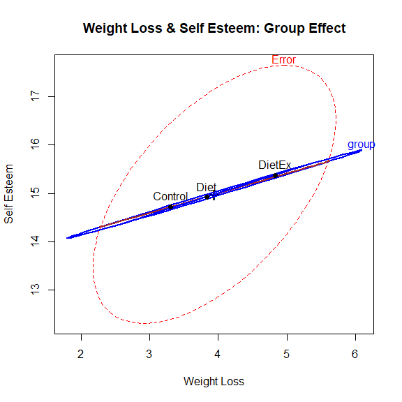
Figure 5.3: HE plot for the between-S effects in the doubly-multivariate design, showing the overall effect of group for weight loss and self esteem, averaged over months.
For the within-S effects, the HE plots use iterm = "month"
(Figure 5.4). The \(\mathbf{H}\) and \(\mathbf{E}\) matrices are all
\(4 \times 4\), for the linear and quadratic trends in weight loss and self esteem, but the
\(\mathbf{H}\) matrices for the month and group:month effects are rank 1 and 2
respectively. We show the linear trends for the two measures together, and the quadratic
trends together.
op <- par(mfrow = c(1, 2))
heplot(wl.mod, imatrix = imatrix, iterm = "month", variables = c("WL.L", "SE.L"),
xlab = "Weight Loss - Linear", ylab = "Self Esteem - Linear",
main = "(a) Within-S Linear Effects")
heplot(wl.mod, imatrix = imatrix, iterm = "month", variables = c("WL.Q", "SE.Q"),
xlab = "Weight Loss - Quadratic", ylab = "Self Esteem - Quadratic",
main = "(b) Within-S Quadratic Effects")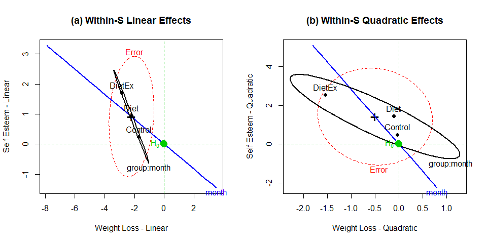
Figure 5.4: HE plots for the within-S effects in the doubly-multivariate design, showing the effects of month and the interaction group:month for weight loss vs. self esteem. (a) Linear effects; (b) Quadratic effects.
par(op)Figure 5.4 shows the plots for the linear and quadratic effects separately
for weight loss vs. self esteem. The plot of linear effects (Figure 5.4(a))
shows that the effect of month can be described as negative slopes for weight loss
combined with positive slopes for self esteem: all groups lose progressively less weight
over time, but generally feel better about themselves.
Differences among groups in the group:month effect are in the same direction, but with
greater differences among groups in the slopes for self esteem. The interpretation of the
quadratic effects (Figure 5.4(b)) is similar, except here, differences in
curvature over months are driven largely by the difference between the DietEx
group and the others on weight loss.
The interested reader might wish to compare the standard univariate plots of means in Figure 5.1 with the HE plots in Figure 5.3 and Figure 5.4. The univariate plots have the advantage of showing the data directly, but cannot show the sources of significant effects in multivariate repeated measures models. HE plots have the advantage that they show directly what is expressed in the multivariate tests for relevant hypotheses.
6 Comparison with other approaches
The principal goals of this vignette have been (a) to describe the extension of the classical MLM to repeated measures designs; (b) to explain how HE plots provide compact and understandable visual summaries of the effects shown in typical numerical tables of MANOVA tests; and (c) illustrate these in a variety of contexts ranging from single-sample designs to complex doubly-multivariate designs.
In the context of repeated measures designs, I mentioned earlier that mixed models for longitudinal data provide an attractive alternative to the MLM (because the former easily accommodate missing or unbalanced data over intra-subject measurements, time-varying covariates, and often allow the residual covariation to be modeled with fewer parameters).
Here we consider a classic data set (Potthoff & Roy, 1964) used in the first application of the MLM to growth-curve analysis. These data are often used as illustrations of longitudinal models, e.g., Verbeke & Molenberghs (2000, sec. 17.4).
Investigators at the University of North Carolina Dental School followed the growth of 27 children (16 males, 11 females) from age 8 until age 14 in a study designed to establish typical patterns of jaw size useful for orthodontic practice. Every two years they measured the distance between the pituitary and the pterygomaxillary fissure, two points that are easily identified on x-ray exposures of the side of the head. The questions of interest include (a) Over this age range, can growth be adequately represented as linear in time, or is some more complex function necessary? (b) Are separate growth curves needed for boys and girls, or can both be described by the same growth curve?
6.1 Longitudinal, mixed model approach
The mixed model for longitudinal data is very general and flexible for the reasons noted
above, but it is inappropriate here to relate any more than the barest of details
necessary for this example.
We begin with simple plots of the data: a profile plot grouped by Sex
(Figure 6.1 (left)), and also a summary plot showing fitted lines for
each individual, together with the pooled ordinary least squares regression of distance
on age (Figure 6.1 (right)).
data("Orthodont", package = "nlme")
p1 <- xyplot(distance ~ age | Sex, data = Orthodont, type = "b", groups = Subject,
pch = 15:25, col = palette(), cex = 1.3, main = "Orthodont data")
p2 <- xyplot(distance ~ age | Sex, data = Orthodont, groups = Subject,
main = "Pooled OLS and Individual linear regressions ~ age",
type = c("g", "r"),
panel = function(x, y, ...) {
panel.xyplot(x, y, ..., col = gray(0.5))
panel.lmline(x, y, ..., lwd = 3, col = "red")
})
print(p1, split = c(1, 1, 2, 1), more = TRUE)
print(p2, split = c(2, 1, 2, 1))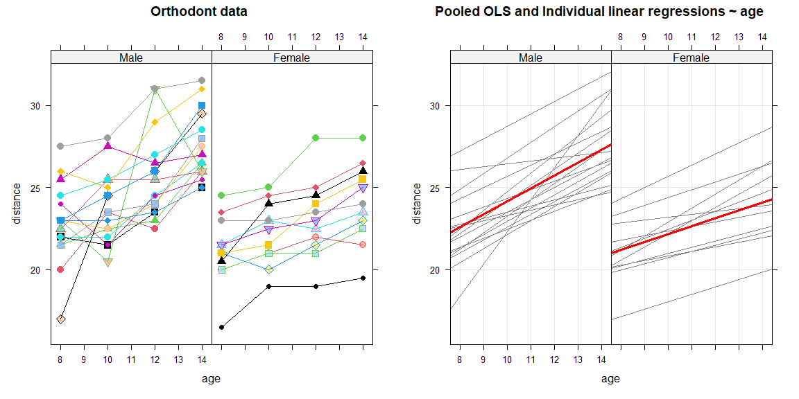
Figure 6.1: Profile plot of Orthodont data, by sex (left); Pooled OLS and individual linear regressions on age, by sex (right).
From these plots, we can see that boys generally have larger jaw distances than girls, and the rate of growth (slopes) for boys is generally larger than for girls. It is difficult to discern any patterns within the sexes, except that one boy seems to stand out, with a lower intercept and steeper slope.
With the longitudinal mixed model, contemplate fitting two models describing an individual’s pattern of growth: a model fitting only linear growth and a model fitting each person’s trajectory exactly by including quadratic and cubic trends in time. For the sake of interpretation of coefficients in these models, it is common to recenter the time variable so that time = 0 corresponds to initial status. Using Year = (age - 8), we have: \[\begin{align} \textrm{m1:} \quad\quad y_{it} & = \beta_{0i} + \beta_{1i} \textrm{Year}_{it} + e_{it} \\ \textrm{m3:} \quad\quad y_{it} & = \beta_{0i} + \beta_{1i} \textrm{Year}_{it} + \beta_{2i} \textrm{Year}^2_{it} + \beta_{3i} \textrm{Year}^3_{it} + e_{it} \; , \end{align}\] where the vector of residuals for subject \(i\) is \(\mathbf{e}_{i \bullet} \sim N ( \mathbf{0}, \mathbf{R}_i )\). (For this example, we take \(\mathbf{R}_i\) to be unstructured, even though other specifications require fewer parameters.) For the linear model (m1), we entertain the possibility that the person-level intercepts (\(\beta_{0i}\)) and slopes (\(\beta_{1i}\)) depend on Sex, and so specify them as random coefficients, \[\begin{align} \beta_{0i} & = \gamma_{00} + \gamma_{01} \textrm{Sex}_{i} + u_{0i} \; , \\ \beta_{1i} & = \gamma_{10} + \gamma_{11} \textrm{Sex}_{i} + u_{1i} \; . \end{align}\] In these equations the \(\gamma\)s are the fixed effects, while the \(u\) (along with the errors \(e_{it}\)) are random effects. Note that Sex is coded 0 = Male, 1 = Female, so \(\gamma_{00}\) and \(\gamma_{10}\) are the intercept and slope for Males; \(\gamma_{01}\) pertains to the difference in intercepts for Females relative to Males, while \(\gamma_{11}\) is the difference in slopes.
The linear growth model can be fit using lme() as follows:
Ortho <- Orthodont
Ortho$year <- Ortho$age - 8 # make intercept = initial status
Ortho.mix1 <- lme(distance ~ year * Sex, data = Ortho,
random = ~ 1 + year | Subject, method = "ML")
anova(Ortho.mix1)
#> numDF denDF F-value p-value
#> (Intercept) 1 79 4197.05 <.0001
#> year 1 79 103.42 <.0001
#> Sex 1 25 8.34 0.0079
#> year:Sex 1 79 5.32 0.0237Similarly, the model (m3) allowing cubic growth at level 1 can be fit using:
Ortho.mix3 <- lme(distance ~ year * Sex + I(year^2) + I(year^3), data = Ortho,
random = ~ 1 + year | Subject, method = "ML")
anova(Ortho.mix3)
#> numDF denDF F-value p-value
#> (Intercept) 1 77 4116.30 <.0001
#> year 1 77 101.43 <.0001
#> Sex 1 25 8.18 0.0084
#> I(year^2) 1 77 0.81 0.3703
#> I(year^3) 1 77 0.22 0.6414
#> year:Sex 1 77 5.22 0.0251A likelihood ratio test confirms that the quadratic and cubic components of Year do not improve the model,
anova(Ortho.mix1, Ortho.mix3)
#> Model df AIC BIC logLik Test L.Ratio p-value
#> Ortho.mix1 1 8 443.806 465.263 -213.903
#> Ortho.mix3 2 10 446.725 473.547 -213.363 1 vs 2 1.08061 0.5826To aid interpretation, we can plot the estimated fixed effects from the linear
model (m1) as follows, using the predict() method for lme objects
to calculate the fitted values for boys and girls over the range of
years (0 to 6) corresponding to ages 8 to 14, as in Figure 6.2 (left).
Similar code produces a plot of the cubic model (Figure 6.2 (right)).
grid <- expand.grid(year = 0:6, Sex = c("Male", "Female"))
grid$age <- grid$year + 8 # plot vs. age
fm.mix1 <- cbind(grid, distance = predict(Ortho.mix1, newdata = grid, level = 0))
fm.mix3 <- cbind(grid, distance = predict(Ortho.mix3, newdata = grid, level = 0))
fm.plot <- function(data, main) {
xyplot(distance ~ age, data = data, groups = Sex, type = "b",
par.settings = list(superpose.symbol = list(cex = 1.2, pch = c(15, 16))),
auto.key = list(text = levels(data$Sex), points = TRUE,
x = 0.05, y = 0.9, corner = c(0, 1)),
main = main)
}
print(fm.plot(fm.mix1, "Linear mixed model: predicted growth"),
split = c(1, 1, 2, 1), more = TRUE)
print(fm.plot(fm.mix3, "Cubic mixed model: predicted growth"),
split = c(2, 1, 2, 1))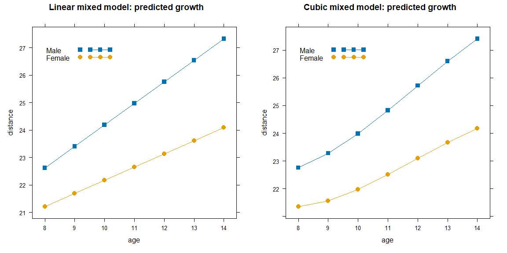
Figure 6.2: Fitted values showing the estimated fixed effects of age, Sex, and their interaction in the linear growth model (left) and cubic growth model (right).
For this simple example with only two predictors, such plots provide a direct visual summary of the fitted fixed effects in the model, as far as they go.
6.2 MLM approach
For the multivariate approach, the Orthodont data must first be reshaped to wide format
with the distance values as separate columns.
Orthowide <- reshape(Orthodont, v.names = "distance", idvar = c("Subject", "Sex"),
timevar = "age", direction = "wide")
some(Orthowide, 4)
#> Subject Sex distance.8 distance.10 distance.12 distance.14
#> 13 M04 Male 25.5 27.5 26.5 27
#> 17 M05 Male 20.0 23.5 22.5 26
#> 53 M14 Male 22.5 25.5 25.5 26
#> 57 M15 Male 23.0 24.5 26.0 30The MLM is then fit as follows, with Sex as the between-S factor.
Age is quantitative, so the intra-subject data frame (idata) is created
with age as an ordered factor.
Ortho.mod <- lm(cbind(distance.8, distance.10, distance.12, distance.14) ~ Sex,
data = Orthowide)
idata <- data.frame(age = ordered(seq(8, 14, 2)))
Ortho.aov <- Anova(Ortho.mod, idata = idata, idesign = ~age)
Ortho.aov
#>
#> Type II Repeated Measures MANOVA Tests: Pillai test statistic
#> Df test stat approx F num Df den Df Pr(>F)
#> (Intercept) 1 0.9940 4123 1 25 < 2e-16 ***
#> Sex 1 0.2710 9 1 25 0.00538 **
#> age 1 0.8256 36 3 23 6.88e-09 ***
#> Sex:age 1 0.2601 3 3 23 0.06960 .
#> ---
#> Signif. codes: 0 '***' 0.001 '**' 0.01 '*' 0.05 '.' 0.1 ' ' 1We see that both Sex and age are highly significant and their interaction is nearly
significant.
Figure 6.3 shows HE plots for the between- and within-S effects, produced
as shown below. The left panel plots the effect of Sex for ages 8 and 14, with a green
line of unit slope. Males clearly show greater growth by age 14, and the difference
between males and females is greater at 14 than at age 8. The right panel shows the
linear and quadratic trends with age, reflecting the overall age main effect and the
Sex:age interaction.
Recalling that the contributions of each displayed variable to each effect
in an HE plot can be seen by their horizontal and vertical shadows relative to the
\(\mathbf{E}\) ellipse, we see that the main effect of age is essentially linear, and the
overall Sex:age effect is nearly significant due to a difference in slopes, but not
curvature.
op <- par(mfrow = c(1, 2))
heplot(Ortho.mod, variables = c(1, 4), asp = 1, col = c("red", "blue"),
xlim = c(18, 30), ylim = c(18, 30),
main = "Orthodont data: Sex effect")
abline(0, 1, col = "green")
heplot(Ortho.mod, idata = idata, idesign = ~age, iterm = "age",
col = c("red", "blue", "brown"),
main = "Orthodont data: Within-S effects")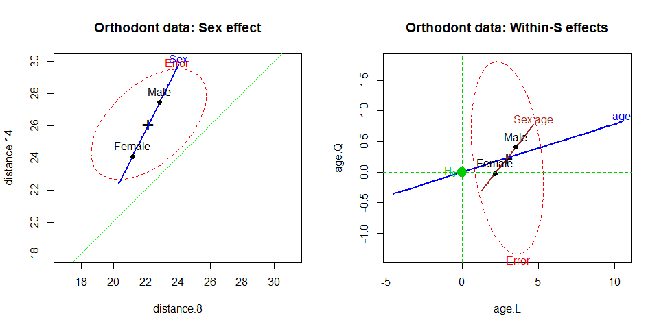
Figure 6.3: HE plots for the Ortho.mod MANOVA model, showing between-S effects for distance at ages 8 and 14 (left) and the linear and quadratic within-S effects for age and Sex:age (right).
par(op)To examine the questions of interest here in more detail, we focus on the intra-subject
design and ask if linear growth is sufficient to explain both average development over
time and differences between boys and girls.
This is easily answered visually from the pairs() plot,
pairs(Ortho.mod, idata = idata, idesign = ~age, iterm = "age") (not shown here),
and, in particular, the panel corresponding to the nonlinear (quadratic and cubic)
components of trend, shown in Figure 6.4.
heplot(Ortho.mod, idata = idata, idesign = ~age, iterm = "age",
col = c("red", "blue", "brown"), variables = c(2, 3),
main = "Orthodont data: Nonlinear Within-S effects")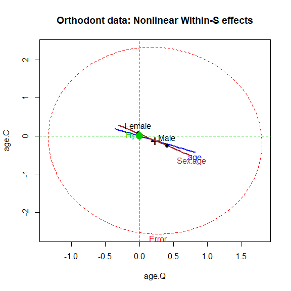
Figure 6.4: Nonlinear components of the within-S effects of age and Sex:age, showing that they are quite small in relation to within-S error.
We can confirm the impression that no nonlinear effects are important by testing linear
hypotheses. To explain this, we first show the details of the test of the overall
Sex:age effect, as tested with linearHypothesis(). The “response transformation
matrix” shown below is equivalent to \(\mathbf{M}_{poly}\) described earlier
(Section 3.1) for a 4-level factor with linear, quadratic and cubic trend
components. The univariate tests for individual contrasts in age
are then based on the diagonal elements of the \(\mathbf{H}\) and \(\mathbf{E}\) matrices.
linearHypothesis(Ortho.mod, hypothesis = "SexFemale", idata = idata, idesign = ~age,
iterms = "age", title = "Sex:age effect")
#>
#> Response transformation matrix:
#> age.L age.Q age.C
#> distance.8 -0.670820 0.5 -0.223607
#> distance.10 -0.223607 -0.5 0.670820
#> distance.12 0.223607 -0.5 -0.670820
#> distance.14 0.670820 0.5 0.223607
#>
#> Sum of squares and products for the hypothesis:
#> age.L age.Q age.C
#> age.L 12.11415 3.81202 -2.86766
#> age.Q 3.81202 1.19955 -0.90238
#> age.C -2.86766 -0.90238 0.67883
#>
#> Sum of squares and products for error:
#> age.L age.Q age.C
#> age.L 59.16733 -11.22417 4.52784
#> age.Q -11.22417 26.04119 -1.28193
#> age.C 4.52784 -1.28193 62.91932
#>
#> Multivariate Tests: Sex:age effect
#> Df test stat approx F num Df den Df Pr(>F)
#> Pillai 1 0.260113 2.69527 3 23 0.069604 .
#> Wilks 1 0.739887 2.69527 3 23 0.069604 .
#> Hotelling-Lawley 1 0.351557 2.69527 3 23 0.069604 .
#> Roy 1 0.351557 2.69527 3 23 0.069604 .
#> ---
#> Signif. codes: 0 '***' 0.001 '**' 0.01 '*' 0.05 '.' 0.1 ' ' 1From this, the linear and nonlinear terms can be tested by selecting the appropriate columns of \(\mathbf{M}_{poly}\) supplied as the contrasts associated with the age effect. For example, for tests of the linear effect of age and the Sex:age interaction (differences in slopes),
linear <- idata
contrasts(linear$age, 1) <- contrasts(linear$age)[, 1]
print(linearHypothesis(Ortho.mod, hypothesis = "(Intercept)",
idata = linear, idesign = ~age, iterms = "age",
title = "Linear age"), SSP = FALSE)
#>
#> Multivariate Tests: Linear age
#> Df test stat approx F num Df den Df Pr(>F)
#> Pillai 1 0.76892 83.187 1 25 1.9862e-09 ***
#> Wilks 1 0.23108 83.187 1 25 1.9862e-09 ***
#> Hotelling-Lawley 1 3.32748 83.187 1 25 1.9862e-09 ***
#> Roy 1 3.32748 83.187 1 25 1.9862e-09 ***
#> ---
#> Signif. codes: 0 '***' 0.001 '**' 0.01 '*' 0.05 '.' 0.1 ' ' 1
print(linearHypothesis(Ortho.mod, hypothesis = "SexFemale",
idata = linear, idesign = ~age, iterms = "age",
title = "Linear Sex:age"), SSP = FALSE)
#>
#> Multivariate Tests: Linear Sex:age
#> Df test stat approx F num Df den Df Pr(>F)
#> Pillai 1 0.169948 5.1186 1 25 0.032614 *
#> Wilks 1 0.830052 5.1186 1 25 0.032614 *
#> Hotelling-Lawley 1 0.204744 5.1186 1 25 0.032614 *
#> Roy 1 0.204744 5.1186 1 25 0.032614 *
#> ---
#> Signif. codes: 0 '***' 0.001 '**' 0.01 '*' 0.05 '.' 0.1 ' ' 1Similarly, the nonlinear effects of age and the Sex:age interaction can be tested as
follows, using the contrasts for quadratic and cubic trends in age.
nonlin <- idata
contrasts(nonlin$age, 2) <- contrasts(nonlin$age)[, 2:3]
print(linearHypothesis(Ortho.mod, hypothesis = "(Intercept)",
idata = nonlin, idesign = ~age, iterms = "age",
title = "Nonlinear age"), SSP = FALSE)
#>
#> Multivariate Tests: Nonlinear age
#> Df test stat approx F num Df den Df Pr(>F)
#> Pillai 1 0.103180 1.38061 2 24 0.27069
#> Wilks 1 0.896820 1.38061 2 24 0.27069
#> Hotelling-Lawley 1 0.115051 1.38061 2 24 0.27069
#> Roy 1 0.115051 1.38061 2 24 0.27069
print(linearHypothesis(Ortho.mod, hypothesis = "SexFemale",
idata = nonlin, idesign = ~age, iterms = "age",
title = "Nonlinear Sex:age"), SSP = FALSE)
#>
#> Multivariate Tests: Nonlinear Sex:age
#> Df test stat approx F num Df den Df Pr(>F)
#> Pillai 1 0.052578 0.665952 2 24 0.52302
#> Wilks 1 0.947422 0.665952 2 24 0.52302
#> Hotelling-Lawley 1 0.055496 0.665952 2 24 0.52302
#> Roy 1 0.055496 0.665952 2 24 0.52302These examples show that, in simple cases, traditional plots of fitted values from mixed models (Figure 6.2) have the advantage of simple visual interpretation in terms of slopes and intercepts, at least for linear models. But such profile plots are generic: comparable plots could equally well be drawn for the fitted values from the MLM in this section. HE plots for repeated measure designs have the additional advantage of showing the nature of significance tests and linear hypotheses, though the structure of the MLM requires separate plots of between-S and within-S effects. In more complex designs with multiple between-S and within-S effects, and designs with multivariate responses (where mixed models do not apply), HE plots gain greater advantage.
7 Discussion
Graphical methods for univariate response models are well-developed,
but analogous methods for multivariate responses are still developing.
Indeed, this is a fruitful area for new research (Friendly, 2007).
HE plots provide one new direction, providing direct visualizations of
effects in MLMs, in the space of response variables (or in the
reduced-rank canonical space, with the candisc package, displaying maximal differences).
This vignette has shown how these methods can be extended to repeated measures designs, by displaying effects in the transformed space of contrasts or linear combinations for within-S effects. As we hope to have shown, these plots can provide insights into the relations among effects and interpretations of those that are significant (or not) which go beyond what is available in traditional, univariate displays.
What has changed since the original paper. When the paper was written, HE plots for within-S effects had to be built by hand: transforming \(\mathbf{Y} \mapsto \mathbf{Y M}\) for each within-S term, fitting a new model to the transformed responses, and relabeling its terms; doubly-multivariate designs had to be analyzed in stages.
Since then, car::Anova(),
car::linearHypothesis() and the plotting functions in heplots have taken the
within-S design directly, through idata and idesign, or imatrix for
doubly-multivariate designs, with iterm choosing the within-S term to plot. This version
uses these throughout, so that every analysis and HE plot comes from the one model for the
original responses.
The transformation \(\mathbf{Y} \mapsto \mathbf{Y M}\) is still shown once (Section 3.1), because it is the clearest way to understand what an HE plot for a within-S effect displays. A new example (Section 4.2) uses polynomial contrasts in the actual times for occasions that are not equally spaced, and shows that a 2D view of a significant within-S effect can miss it when the effect is spread over several dimensions.
Acknowledgments
I am grateful to John Fox for collaboration, advice and continued development
of the car package which provides the computational infrastructure for the
heplots package. The Associate Editor and one reviewer of the original paper in the
Journal of Statistical Software helped considerably in clarifying the presentation of
these methods.